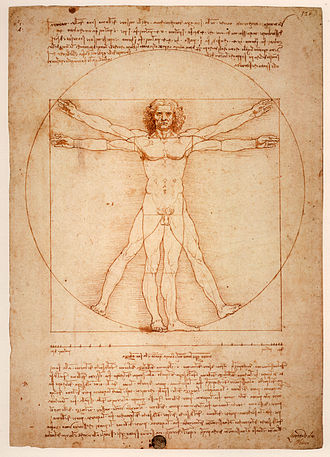

Kesehatan, keafiatan, atau kewarasan adalah kondisi kesejahteraan fisik, mental, dan sosial yang lengkap dan bukan sekadar tidak adanya penyakit atau kelemahan.[1] Pemahaman tentang kesehatan telah bergeser seiring dengan waktu. Berkembangnya teknologi kesehatan berbasis digital telah memungkinkan setiap orang untuk mempelajari dan menilai diri mereka sendiri, dan berpartisipasi aktif dalam gerakan promosi kesehatan. Berbagai faktor sosial berpengaruh terhadap kondisi kesehatan, seperti perilaku individu, kondisi sosial, genetik dan biologi, perawatan kesehatan, dan lingkungan fisik
